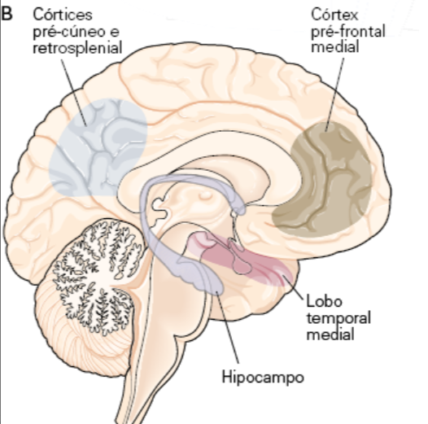
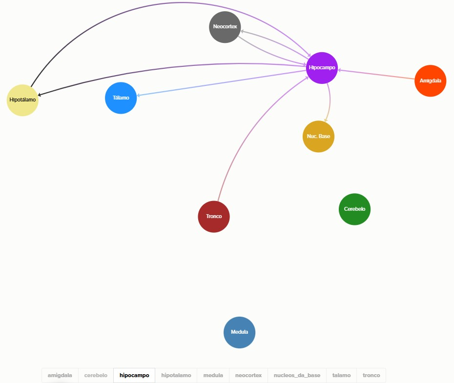

<main>
    <section class="section">
        <div class="container narrow">
            <h1 class="">Hipocampo - O quê aconteceu, onde e quando!!</h1>
            <article class="doc-content">
                <div class="doc-content">
                    <p>
                        O Hipocampo participa ativamente da codificação, consolidação, armazenamento e evocação de memórias declarativas (episódicas e
                        semânticas). Não é considerada uma área subcortical, está localizada no córtex, mas em uma zona mais primitiva chamada de
                        Arquicórtex, possuindo 3 camadas de neurônios, diferente do Neocórtex, que possui 6 camadas.
                    </p>
                    <p>
                        O hipocampo não está na superfície como o neocórtex; durante o desenvolvimento, ele é “empurrado”/dobrado para a face medial
                        do lobo temporal, ficando em posição profunda, o que faz parecer que seja subcortical. Contudo, sua origem embrionária, tipo
                        de neurônios e organização em camadas mostram que ele é tecido cortical — só que uma forma mais antiga e simplificada, chamada
                        arquicórtex, com cerca de três camadas, em contraste com as seis camadas do neocórtex.
                    </p>

                    <p>
                        
                    </p>
                    <h2>Funções</h2>
                    <ul>
                        <li>
                            Codificação - Transformar experiências (sensoriais, emocionais, cognitivas) em um formato que possa ser armazenado pelo
                            sistema nervoso, envolvendo o neocórtex de associação, sistemas atencionais, emoção e hipocampo.
                            <br />
                            Durante a codificação, o hipocampo recebe informações das áreas de associação e cria um traço episódico inicial (engram),
                            conectando representações já existentes no neocórtex. O conteúdo detalhado da experiência permanece distribuído no córtex.
                        </li>
                        <li>
                            Consolidação - Transforma uma informação ainda instável e armazenada temporariamente em uma forma mais estável,
                            fortalecendo as redes neurais que existem no córtex, permitindo ao córtex recuperá-las sem depender do hipocampo. <br
                            Fatores que atuam sobre a consolidação: O hipocampo reativa padrões corticais (durante repouso, sono, relembrar, replay
                            neural), fortalecendo sinapses entre áreas corticais.
                        </li>
                        <li>
                            Armazenamento e Evocação- O armazenamento das memórias de longo prazo ficam no córtex, e não precisam do Hipocampo para
                            recuperá-las, no entanto, ainda existe a dependência do Hipocampo para ampla associação contextual. Sem o Hipocampo a
                            evocação fica “pobre” de contexto, já que o Hipocampo permite recombinar detalhes, enriquecer contexto, recuperar
                            associações amplas e integrar múltiplos elementos em narrativa coerente.
                            <br />
                            O córtex é muito dependente do hipocampo no processamento secundário e terciário, quando ocorrem as associações. A maior
                            “potência” do hipocampo é manter as associações que foram criadas, funcionando como um índice para acessar e correlacionar
                            memórias.
                        </li>
                        <li>
                            Na codificação temos uma plasticidade funcional, ou seja, mudanças em neurotransmissores e receptores, podendo considerar
                            o estágio inicial da memória. Na consolidação e armazenamento ocorre a plasticidade estrutural (morfológica), as
                            estruturas são modificadas para representar a memória de longo prazo. A plasticidade funcional ocorre principalmente no
                            Hipocampo, já a estrutural no Hipocampo e Córtex, mas o Córtex é que a mantém de forma estável no longo prazo.
                        </li>
                        <li>
                            Integrado ao sistema límbico, o hipocampo fornece contexto espacial e episódico à experiência. Em paralelo, a amígdala
                            atribui valência emocional a eventos; a combinação de ambos permite vincular o “o quê/onde/quando” ao “como foi sentido”.
                        </li>
                    </ul>

                    <h2>Partes Constituintes</h2>
                    <ul>
                        <li>Giro Denteado - Ajuda a diferenciar memórias parecidas, criando codificações únicas para episódios similares.</li>
                        <li>
                            Cornu Ammonis - principal núcleo de processamento interno do hipocampo. Ele recebe informações do giro denteado e do
                            córtex entorrinal, e as utiliza para criar e recuperar associações entre elementos de uma experiência. Sua função central
                            é permitir que o cérebro estabeleça relações rápidas entre eventos, formando representações coerentes de episódios. Esse
                            processo envolve tanto a capacidade de recompor memórias a partir de pistas parciais (pattern completion) quanto de
                            organizar a informação ao longo do tempo, contribuindo para a percepção de sequência e contexto.
                            <br />
                            Também integra essas informações e as transmite adiante — especialmente pela via CA1 — rumo ao subículo e ao córtex,
                            permitindo que memórias inicialmente frágeis sejam estabilizadas e distribuídas. De modo geral, o CA atua como um núcleo
                            associativo crítico para a memória episódica recente, sustentando a formação, reorganização e recuperação de recordações
                            por meio de forte plasticidade sináptica. <br />
                            Evidências recentes sugerem que a área CA2 desempenha um papel crucial na memória social, a capacidade de um indivíduo de
                            lembrar e reconhecer outros membros de sua própria espécie (seus coespecíficos)
                        </li>
                        <li></li>
                    </ul>

                    <h2>Aferências e Eferências</h2>
                    <p>
                        <span>1 - Visite o link </span
                        ><span
                            ><a
                                href="https://www.google.com/url?q=https://kumu.io/gdms/snc%23integracao-aferencias-e-eferencias/aferencias-eferencias&amp;sa=D&amp;source=editors&amp;ust=1761390868345874&amp;usg=AOvVaw0R7snreWB24_2CXfjbEtWf"
                                >https://kumu.io/gdms/snc#integracao-aferencias-e-eferencias/aferencias-eferencias</a
                            ></span
                        ><span> </span>
                    </p>
                    <p><span>2 - Selecione na parte inferior, nos botões de filtro o Hipocampo.</span></p>
                    <p>
                        <span
                            >3 - Clicando na aresta de conexão, que possui direção, será possível visualizar detalhes sobre a conexão, veja a imagem
                            abaixo:</span
                        >
                    </p>
                    <p>
                        <span></span>
                    </p>
                    <p><span></span></p>
                    <p><span></span></p>

                    <h2>Disfunções</h2>
                    <p>
                        O hipocampo é essencial para a formação de novas memórias episódicas, para a navegação espacial e para a integração contextual
                        de experiências. Lesões ou disfunções nessa estrutura levam, classicamente, à amnésia anterógrada, isto é, incapacidade de
                        formar novas memórias declarativas, como observado no caso H.M. Além disso, podem ocorrer déficits de memória retrógrada
                        recente, já que memórias ainda não totalmente consolidadas permanecem dependentes do hipocampo. Mesmo quando memórias antigas
                        são preservadas, elas costumam ser evocadas com pobreza de detalhes e contexto, pois a capacidade de recombinar elementos e
                        reconstruir episódios fica prejudicada. Alterações no hipocampo também afetam a memória espacial, dificultando orientação no
                        ambiente e a criação de mapas cognitivos.
                    </p>
                    <p>
                        Do ponto de vista clínico, o hipocampo está envolvido em diversas condições, como Doença de Alzheimer, em que ocorre atrofia
                        precoce e progressiva da região, levando ao comprometimento de memória recente; epilepsia do lobo temporal, que frequentemente
                        surge de alterações estruturais no hipocampo (como esclerose hipocampal), causando crises recorrentes e prejuízo cognitivo; e
                        estresse crônico/TEPT, em que níveis elevados de cortisol podem reduzir volume hipocampal e prejudicar a consolidação de
                        memórias. Outras condições, como hipóxia, traumatismo craniano e infecções, também podem comprometer o hipocampo, resultando
                        em déficits na memória e nas funções associativas dependentes dessa estrutura.
                    </p>
                </div>
            </article>
        </div>
    </section>
</main>
